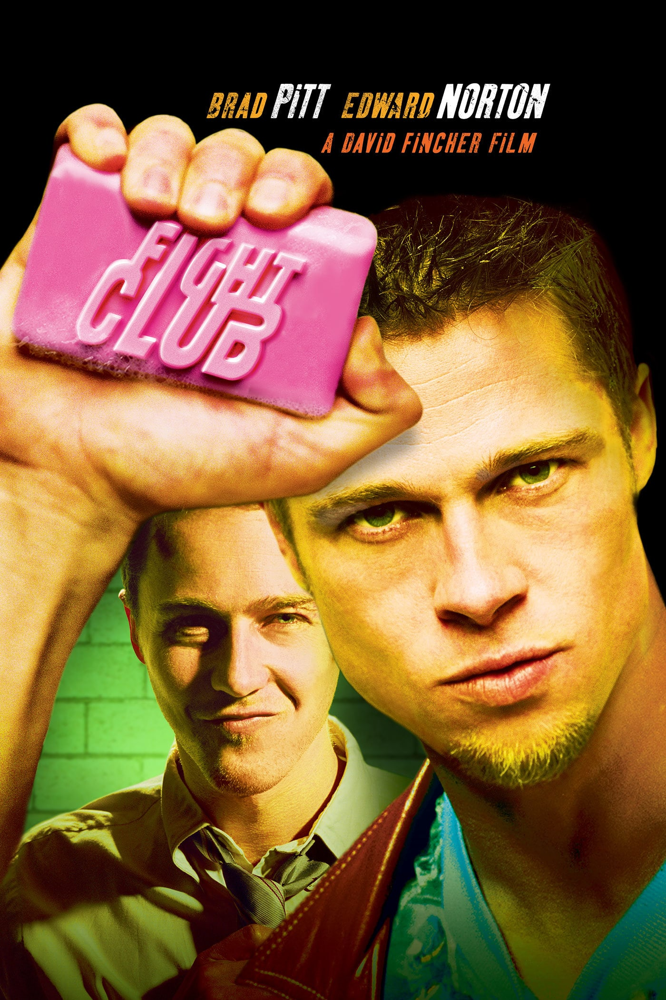
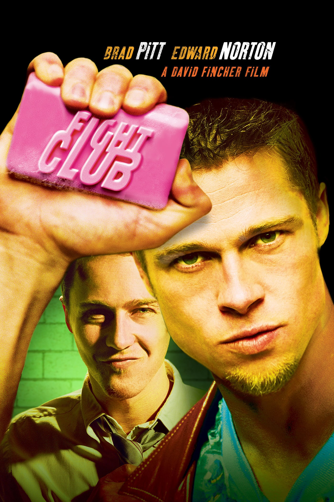

These are some of my favorite movies (specifically non-animated movies/cult classics)
Ferris Bueller's Day Off
LINKFerris Bueller's Day Off is a 1986 American teen comedy film written, co-produced, and directed by John Hughes and co-produced by Tom Jacobson. The film stars Matthew Broderick, Mia Sara, and Alan Ruck. It tells the story of a high school slacker who skips school with two of his friends for a day in Chicago and regularly breaks the fourth wall to explain his techniques and inner thoughts.
Hughes wrote the screenplay in less than a week. Filming began in September 1985 and finished in November, featuring many Chicago landmarks including the then Sears Tower, Wrigley Field and the Art Institute of Chicago. The film was Hughes's love letter to Chicago: "I really wanted to capture as much of Chicago as I could. Not just in the architecture and landscape, but the spirit."[3]
Released by Paramount Pictures on June 11, 1986, the film became the tenth highest-grossing film of 1986 in the United States, grossing $70 million over a $5 million budget. The movie received acclaim from critics and audiences who praised Broderick's performance, the humor, and the tone.
In 2014, the film was selected for preservation in the United States National Film Registry by the Library of Congress, being deemed "culturally, historically, or aesthetically significant."[4][5][6] The film was followed by a television series, starring Charlie Schlatter as title character. A spin-off series titled Sam & Victor's Day Off, which focuses on the two valets who took Cameron's father's Ferrari on a joy ride, is in development for Paramount Plus.[7]
The Breakfast Club is a 1985 American teen coming-of-age comedy-drama film written, produced, and directed by John Hughes. It stars Emilio Estevez, Paul Gleason, Anthony Michael Hall, Judd Nelson, Molly Ringwald, and Ally Sheedy. The film tells the story of five teenagers from different high school cliques who serve a Saturday detention overseen by their authoritarian vice-principal.
The Breakfast Club premiered in Los Angeles on February 7, 1985, and was theatrically released by Universal Pictures on February 15, 1985. It grossed $51.5 million against a $1 million budget, and earned acclaim from critics, who consider it to be one of Hughes's most memorable and recognizable works. The media subsequently referred to the film's five main actors as members of a group called the "Brat Pack".
In 2015, the film was digitally remastered and was re-screened in 430 theaters in celebration of its 30th anniversary.[4] In 2016, the film was selected for preservation in the United States National Film Registry by the Library of Congress as being "culturally, historically, or aesthetically significant".[5][6][7][8]
Fight Club is a 1999 American film directed by David Fincher and starring Brad Pitt, Edward Norton, and Helena Bonham Carter. It is based on the 1996 novel of the same name by Chuck Palahniuk. Norton plays the unnamed narrator, who is discontented with his white-collar job. He forms a "fight club" with soap salesman Tyler Durden (Pitt), and becomes embroiled in a relationship with a destitute woman, Marla Singer (Bonham Carter).
Palahniuk's novel was optioned by Fox 2000 Pictures producer Laura Ziskin, who hired Jim Uhls to write the film adaptation. Fincher was selected because of his enthusiasm for the story. He developed the script with Uhls and sought screenwriting advice from the cast and others in the film industry. It was filmed in and around Los Angeles from July to December 1998. He and the cast compared the film to Rebel Without a Cause (1955) and The Graduate (1967), with a theme of conflict between Generation X and the value system of advertising.[5][6]
Studio executives did not like the film, and they restructured Fincher's intended marketing campaign to try to reduce anticipated losses. Fight Club failed to meet the studio's expectations at the box office, and received polarized reactions from critics. It was ranked as one of the most controversial and talked-about films of 1990s. The film later found commercial success with its home video release, establishing Fight Club as a cult classic and causing media to revisit the film. In 2009, on the tenth anniversary of the film's release, The New York Times dubbed it the "defining cult movie of our time."[7]
Pulp Fiction is a 1994 American crime film written and directed by Quentin Tarantino, who conceived it with Roger Avary.[4] Starring John Travolta, Samuel L. Jackson, Bruce Willis, Tim Roth, Ving Rhames, and Uma Thurman, it tells several stories of crime in Los Angeles. The title refers to the pulp magazines and hardboiled crime novels popular during the mid-20th century, known for their graphic violence and punchy dialogue.
Tarantino wrote Pulp Fiction in 1992 and 1993, incorporating scenes that Avary originally wrote for True Romance (1993). Its plot occurs out of chronological order. The film is also self-referential from its opening moments, beginning with a title card that gives two dictionary definitions of "pulp". Considerable screen time is devoted to monologues and casual conversations with eclectic dialogue revealing each character's perspectives on several subjects, and the film features an ironic combination of humor and strong violence. TriStar Pictures reportedly turned down the script as "too demented". Miramax co-chairman Harvey Weinstein was enthralled, however, and the film became the first that Miramax fully financed.
Pulp Fiction won the Palme d'Or at the 1994 Cannes Film Festival, and was a major critical and commercial success. It was nominated for seven awards at the 67th Academy Awards, including Best Picture, and won Best Original Screenplay; it earned Travolta, Jackson, and Thurman Academy Award nominations and boosted their careers. Its development, marketing, distribution, and profitability had a sweeping effect on independent cinema.
Pulp Fiction is widely regarded as Tarantino's masterpiece, with particular praise for its screenwriting.[5] The self-reflexivity, unconventional structure, and extensive homage and pastiche have led critics to describe it as a touchstone of postmodern film. It is often considered a cultural watershed, influencing films and other media that adopted elements of its style. The cast was also widely praised, with Travolta, Thurman and Jackson earning particular acclaim. In 2008, Entertainment Weekly named it the best film since 1983[6] and it has appeared on many critics' lists of the greatest films ever made. In 2013, Pulp Fiction was selected for preservation in the United States National Film Registry by the Library of Congress as "culturally, historically, or aesthetically significant".[7][8][9]
Titanic is a 1997 American epic romance and disaster film directed, written, produced, and co-edited by James Cameron. Incorporating both historical and fictionalized aspects, it is based on accounts of the sinking of the RMS Titanic, and stars Leonardo DiCaprio and Kate Winslet as members of different social classes who fall in love aboard the ship during its ill-fated maiden voyage. Also starring are Billy Zane, Kathy Bates, Frances Fisher, Gloria Stuart, Bernard Hill, Jonathan Hyde, Victor Garber, and Bill Paxton.
Cameron's inspiration for the film came from his fascination with shipwrecks; he felt a love story interspersed with the human loss would be essential to convey the emotional impact of the disaster. Production began in 1995, when Cameron shot footage of the actual Titanic wreck. The modern scenes on the research vessel were shot on board the Akademik Mstislav Keldysh, which Cameron had used as a base when filming the wreck. Scale models, computer-generated imagery, and a reconstruction of the Titanic built at Baja Studios were used to re-create the sinking. The film was co-financed by Paramount Pictures and 20th Century Fox; the former handled distribution in North America while the latter released the film internationally. It was the most expensive film ever made at the time, with a production budget of $200 million.
Upon its release on December 19, 1997, Titanic achieved significant critical and commercial success, and then received numerous accolades. Nominated for 14 Academy Awards, it tied All About Eve (1950) for the most Oscar nominations, and won 11, including the awards for Best Picture and Best Director, tying Ben-Hur (1959) for the most Oscars won by a single film. With an initial worldwide gross of over $1.84 billion, Titanic was the first film to reach the billion-dollar mark. It remained the highest-grossing film of all time until another Cameron film, Avatar, surpassed it in 2010. A 3D version of Titanic, released on April 4, 2012, to commemorate the centennial of the sinking, earned it an additional $343.6 million worldwide, pushing the film's worldwide total to $2.195 billion and making it the second film to gross more than $2 billion worldwide (after Avatar). In 2017, the film was re-released for its 20th anniversary and was selected for preservation in the United States National Film Registry for being "culturally, historically or aesthetically significant".
.

 
